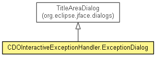

org.eclipse.emf.cdo.ui
Class CDOInteractiveExceptionHandler.ExceptionDialog
java.lang.Object
 org.eclipse.jface.window.Window
org.eclipse.jface.dialogs.Dialog
org.eclipse.jface.dialogs.TrayDialog
org.eclipse.jface.dialogs.TitleAreaDialog
org.eclipse.emf.cdo.ui.CDOInteractiveExceptionHandler.ExceptionDialog
org.eclipse.jface.window.Window
org.eclipse.jface.dialogs.Dialog
org.eclipse.jface.dialogs.TrayDialog
org.eclipse.jface.dialogs.TitleAreaDialog
org.eclipse.emf.cdo.ui.CDOInteractiveExceptionHandler.ExceptionDialog
- All Implemented Interfaces:
- IShellProvider
- Enclosing class:
- CDOInteractiveExceptionHandler
- public static class CDOInteractiveExceptionHandler.ExceptionDialog
- extends TitleAreaDialog

A dialog that shows CDO related exceptions in a convenient manner.
- See Also:
CDOInteractiveExceptionHandler
| Fields inherited from class org.eclipse.jface.dialogs.Dialog |
blockedHandler, buttonBar, DIALOG_DEFAULT_BOUNDS, DIALOG_PERSISTLOCATION, DIALOG_PERSISTSIZE, dialogArea, DLG_IMG_ERROR, DLG_IMG_HELP, DLG_IMG_INFO, DLG_IMG_MESSAGE_ERROR, DLG_IMG_MESSAGE_INFO, DLG_IMG_MESSAGE_WARNING, DLG_IMG_QUESTION, DLG_IMG_WARNING, ELLIPSIS |
| Fields inherited from class org.eclipse.jface.window.Window |
CANCEL, OK |
| Methods inherited from class org.eclipse.jface.dialogs.TitleAreaDialog |
createContents, getErrorMessage, getInitialSize, getMessage, getTitleArea, getTitleImageLabel, setErrorMessage, setMessage, setMessage, setTitle, setTitleAreaColor, setTitleImage |
| Methods inherited from class org.eclipse.jface.dialogs.TrayDialog |
closeTray, createButtonBar, createHelpControl, getLayout, getTray, handleShellCloseEvent, isDialogHelpAvailable, isHelpAvailable, openTray, setDialogHelpAvailable, setHelpAvailable |
| Methods inherited from class org.eclipse.jface.dialogs.Dialog |
applyDialogFont, buttonPressed, cancelPressed, close, convertHeightInCharsToPixels, convertHeightInCharsToPixels, convertHorizontalDLUsToPixels, convertHorizontalDLUsToPixels, convertVerticalDLUsToPixels, convertVerticalDLUsToPixels, convertWidthInCharsToPixels, convertWidthInCharsToPixels, create, createButton, dialogFontIsDefault, getBlockedHandler, getButton, getButtonBar, getCancelButton, getDialogArea, getDialogBoundsSettings, getDialogBoundsStrategy, getImage, getInitialLocation, getOKButton, initializeBounds, initializeDialogUnits, isResizable, okPressed, setBlockedHandler, setButtonLayoutData, setButtonLayoutFormData, shortenText |
| Methods inherited from class org.eclipse.jface.window.Window |
canHandleShellCloseEvent, constrainShellSize, createShell, getConstrainedShellBounds, getContents, getDefaultImage, getDefaultImages, getDefaultOrientation, getParentShell, getReturnCode, getShell, getShellListener, getShellStyle, getWindowManager, handleFontChange, open, setBlockOnOpen, setDefaultImage, setDefaultImages, setDefaultModalParent, setDefaultOrientation, setExceptionHandler, setParentShell, setReturnCode, setShellStyle, setWindowManager |
| Methods inherited from class java.lang.Object |
clone, equals, finalize, getClass, hashCode, notify, notifyAll, toString, wait, wait, wait |
TITLE
public static final String TITLE
CDOInteractiveExceptionHandler.ExceptionDialog
public CDOInteractiveExceptionHandler.ExceptionDialog(Shell parentShell,
CDOSession session,
int attempt,
Exception exception)
configureShell
protected void configureShell(Shell newShell)
- Overrides:
configureShell in class Window
createDialogArea
protected Control createDialogArea(Composite parent)
- Overrides:
createDialogArea in class TitleAreaDialog
createButtonsForButtonBar
protected void createButtonsForButtonBar(Composite parent)
- Overrides:
createButtonsForButtonBar in class Dialog
Copyright (c) 2011, 2012 Eike Stepper (Berlin, Germany) and others.